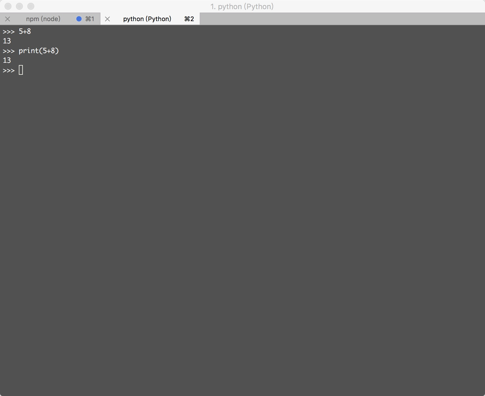
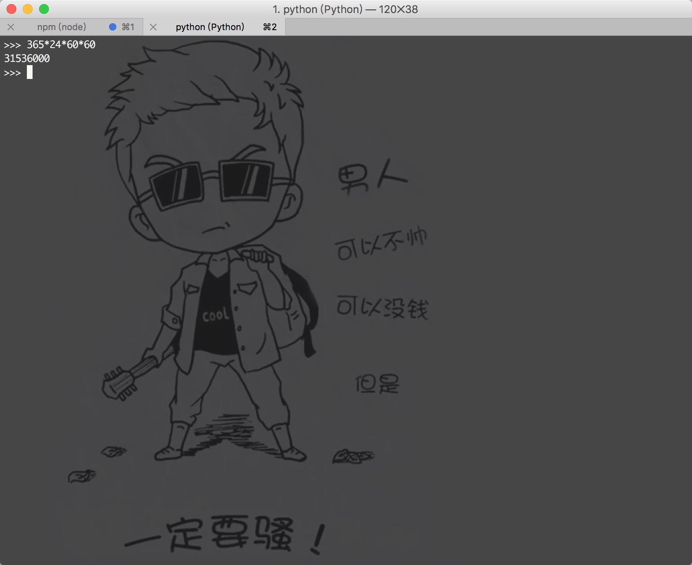

学习Python 001
测试题：
0.Python 是什么类型的语言？
Python是一种面向对象、解释型、动态类型计算机程序设计语言
解释型：程序无需编译成二进制代码，而是在执行时对语句一条一条编译
动态类型：在程序执行过程中，可以改变变量的类型
它常被昵称为胶水语言，能够把用其他语言制作的各种模块（尤其是C/C++）很轻松地联结在一起
1.IDLE 是什么？
是 Python 自带的ide
2.
print()的作用是什么？
打印输出（）中的内容
4.为什么 >>>
print('I love www.haur.love ' * 5)可以正常执行，但 >>>print('I love fwww.haur.love ' + 5)却报错？
因为print('I love www.haur.love ' * 5) 是将字符串 'I love www.haur.love '直接乘以5次打印
而print('I love fwww.haur.love ' + 5)中的字符串和Number型是不能相加也不能连接的。
5.如果我需要在一个字符串中嵌入一个双引号，正确的做法是？
外层用单引号包含起来,或者使用\进行转义
6.为什么我们要使用 Python3？Python2到底有什么问题？看起来很多程序员依然都在使用Python2？
确实还有相当多的程序员在使用Python2，不过Python3 才是Python 发展的未来，如果你了解了Python3,Python2的代码阅读对于你来说根不成问题！
动动手：
0.动手试试直接输入
5+8与输入print(5+8)有何不同？
沒有任何區別

1.在交互模式中，使用 Python 计算一年有多少秒？
print(365*24*60*60)


微信打賞

支付寶打賞